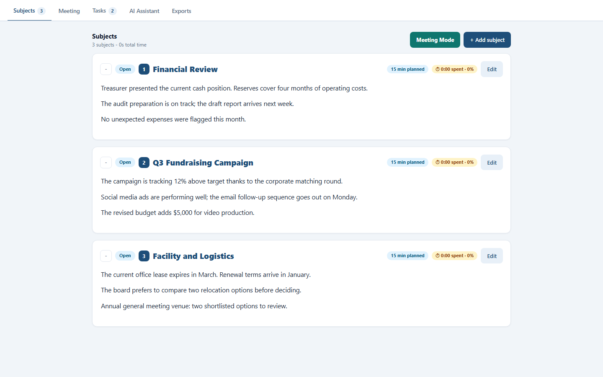
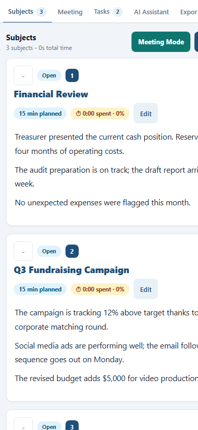
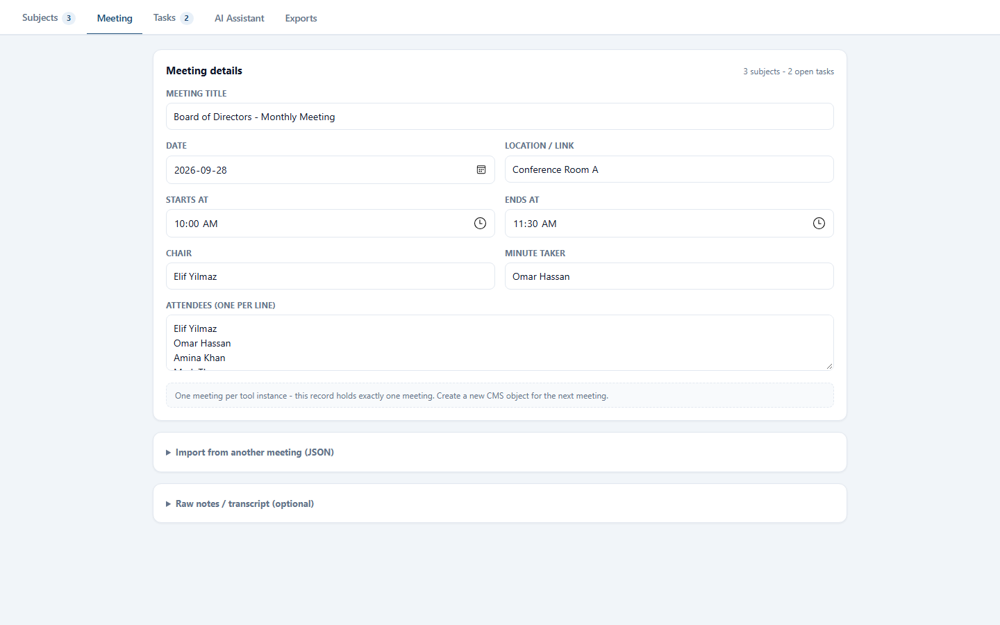

Meeting Notes - Social Media Share Kit
Ready-to-share content for Meeting Notes. Every block has a Copy button - copy it and paste it directly into WhatsApp, X, LinkedIn, Instagram or Facebook. Satellite of the SSOT (SSOT); generated by scripts/generate-docs.js. Updated: 2026-09-28.
1. WhatsApp messages
WhatsApp - short
📋 Meeting Notes: run every agenda item on time and leave with the minutes already written. Per-subject countdown, AI-drafted minutes, autosaved. Try it: [link]
WhatsApp - medium
Board meetings that run long, minutes written days later - sound familiar?
Meeting Notes fixes both:
⏱ A countdown per agenda item, with overrun in red
📊 Planned vs spent time for every subject
🤖 Minutes drafted by the AI Assistant
✅ Action items with owners before anyone leaves
Everything autosaves - try it: [link]
WhatsApp - long / announcement
📢 New in Meeting Notes: the mobile refresh
Meeting Notes now fits in your pocket:
• Slide-in subjects drawer and full touch support on phones
• Cleaner subjects - notes, status and time only, no extra layers
• Timer beside the tasks in Meeting Mode - countdown or spent time as the big number
• Same AI-drafted minutes and six export formats
Start your next meeting here: [link]
2. Social media posts
X post (max 280 characters)
Meeting Notes just got a mobile refresh 📱
Now every board agenda fits in your pocket: subjects drawer, timer beside the tasks, AI-drafted minutes.
Run the meeting from your phone - projector optional.
#MeetingNotes #BoardMeetings [link]
LinkedIn post
Board meetings don't happen only in boardrooms anymore.
We refreshed Meeting Notes so it works everywhere: a slide-in subjects drawer on phones, the timer beside the tasks in Meeting Mode, and a subject model reduced to what actually matters - notes, status and time.
The big number now switches by context: the countdown while it runs, the spent time when it does not.
Same AI-drafted minutes and six export formats, now fully mobile.
[link]
Instagram caption
Meeting Notes, now mobile-first 📱
• Subjects drawer on phones
• Timer beside the tasks
• Minutes drafted by AI
Your boardroom, in your pocket - link in bio. [link]
Facebook post
Good news for boards that meet on the go: Meeting Notes is now fully mobile. 📱
Run the agenda from your phone with a slide-in subjects drawer, keep an eye on the timer right beside the tasks, and let the AI draft the minutes.
Which do you use more - phone or projector? Tell us below 👇
[link]
3. Hashtags
[#MeetingNotes] [#BoardMeetings] [#MeetingMinutes] [#ProductivityTools] [#NonprofitGovernance]
#MeetingNotes
#BoardMeetings
#MeetingMinutes
#ProductivityTools
#NonprofitGovernance
4. Suggested visuals
- Screenshot of Meeting Mode on a phone with the subjects drawer open - the hero visual of this ship.
- Side-by-side: desktop dashboard and the mobile subjects view.
- A short screen recording: open the drawer on a phone, press Start, then export the minutes.
5. One-pager pitch
Meeting Notes is the boardroom workspace inside UniconHub: one autosaved document for the agenda, notes and action items, with a per-subject countdown and planned-vs-spent tracking for every topic. Now fully mobile: a slide-in subjects drawer, touch-sized controls, and a panel timer whose big number shows the countdown while it runs and the spent time when it does not. The AI Assistant drafts the minutes and extracts action items, and exports cover minutes PDF, board PDF, CSV, XLS, JSON, Markdown and email. For boards and committees that want meetings on time and documents on the same day - no separate login, no lost edits.
6. Links to use
- Marketing page:
webpage.html - Presentation deck:
presentation.html - User help:
help.html - Update history:
updates.html
7. Media to attach
Screenshots for the latest ship
Attach the real screenshots below to every post of this release. Diagrams or promo images can be added the same way - the goal is one strong visual per post.



v0.1.6 - First release2026-09-28
WhatsApp - short
📋 Meeting Notes: run every agenda item on time and leave with the minutes already written. Per-subject countdown, AI-drafted minutes, autosaved. Try it: [link]
WhatsApp - long / announcement
📢 New in UniconHub: Meeting Notes
Your boardroom workspace in one tool:
• Agenda subjects with notes and per-subject timers
• Meeting Mode for the projector - big text, per-subject countdown, break slot
• Spent-time tracking that shows how long each topic really took
• AI Assistant that drafts the minutes and extracts action items
• Exports: minutes PDF, board PDF, CSV, XLS, JSON, Markdown, email
No Save button - every change autosaves.
Start your next meeting here: [link]
One-pager pitch
Meeting Notes is the boardroom workspace inside UniconHub: one autosaved document for the agenda, notes and action items, with a per-subject countdown and planned-vs-spent tracking for every topic. The AI Assistant drafts the minutes and extracts action items, and exports cover minutes PDF, board PDF, CSV, XLS, JSON, Markdown and email. For boards and committees that want meetings on time and documents on the same day - no separate login, no lost edits.
Hashtags
[#MeetingNotes] [#BoardMeetings] [#MeetingMinutes] [#ProductivityTools] [#NonprofitGovernance]
8. Share sets by release
Every SHIP adds its own share set - use the newest on top. Multiple updates mean multiple sets; nothing is ever deleted, only archived.
Meeting Notes - social media share kit. Satellite of the SSOT system -
derived content, not a source of truth.